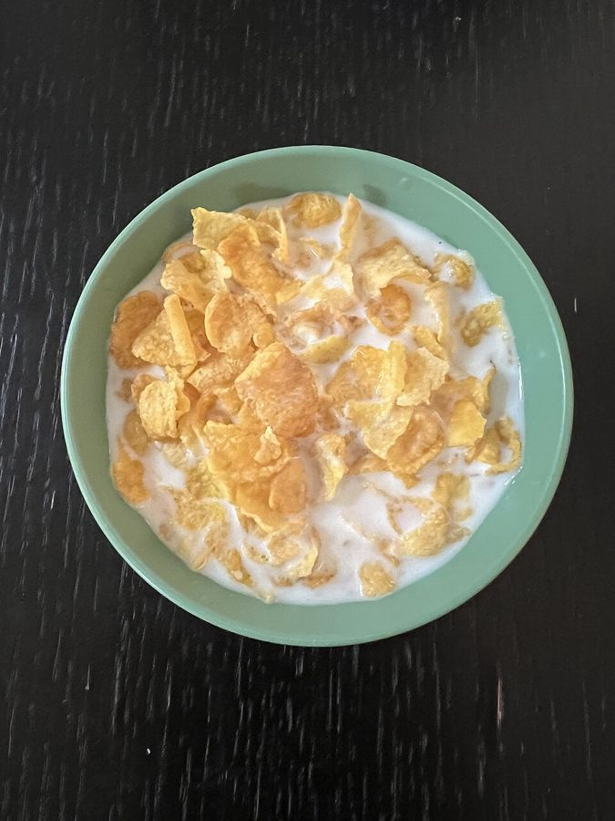
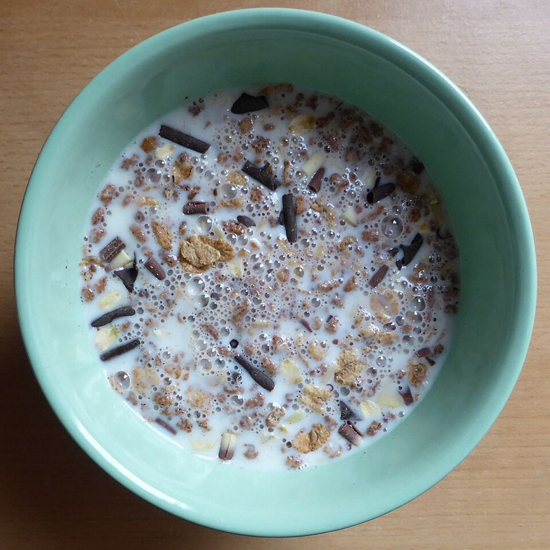
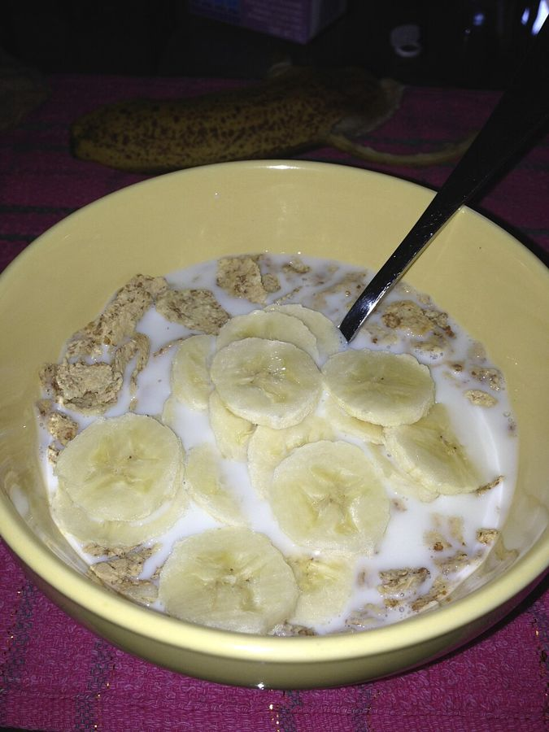

Estadística para comunicar decisiones
Casos reales de probabilidad y estadística aplicada a las ventas, la expansión y el entorno de una empresa.
Ruta de la sesión
Sesenta minutos, siete bloques. Haz clic en uno para saltar a él.
Introducción
Preguntas de negocio y tu papel como comunicador.
Enfoque analítico
Un objetivo, muchos caminos.
Simular el futuro
Detrás de los modelos predictivos.
Casos de uso
De las ventas al entorno.
Visualizar y comunicar
Claro, simple y honesto.
El reto de los datos
Conseguirlos y limpiarlos.
Cierre
Síntesis y proyectos.
Las preguntas
de toda empresa
Antes de hablar de métodos, hablemos de lo que realmente quieren saber las organizaciones.
4 MINSeis preguntas que toda empresa se hace
Cada una se puede responder con datos. Pasa el cursor para ver un ejemplo.
¿Cómo vender más?
Entender qué compran, quién y por qué.
¿A qué precio?
El precio que equilibra ingreso y demanda.
¿Dónde abrir?
Elegir ubicaciones con mayor potencial.
¿Qué puede salir mal?
Medir y reducir riesgos de toda naturaleza.
¿Qué pasará?
Predecir variables clave para planear.
¿Qué impacto dejamos?
Efectos sociales, económicos y ambientales.
Por qué importa a la comunicación corporativa
Comunicar bien es lograr coherencia entre lo que la organización es, hace, dice y cómo la perciben.
Un objetivo,
muchos caminos
Por qué conviene cuantificar y cómo se elige el método adecuado.
8 MINCuando las cifras sustentan el mensaje
Cuatro escenarios donde un resultado cuantitativo es indispensable.
En una crisis
Reconocer el problema y explicar con datos qué se está haciendo.
Al reportar impacto
Empleo, impuestos y huella ambiental respaldan la reputación.
Ante autoridades
Justificar permisos, inversiones o expansión con evidencia.
Al planear
Anticipar ventas o riesgos y comunicarlos con su margen de error.
Cuatro enfoques para incrementar las ventas
Cada enfoque tiene sub-objetivos y técnicas. Clic en una técnica con ↗ para ver un caso.
Expansión geográfica
- Seleccionar un punto de venta con alto dinamismo económico.
- Seleccionar un punto en un mercado o zona aún no atendida.
Precios y productos óptimos
- Estrategias específicas para los distintos segmentos del mercado (teoría de la utilidad y de la elección del consumidor).
- Precios competitivos que maximizan el valor de la empresa (elasticidad precio de la demanda).
Análisis de la competencia
- Estrategias dinámicas de precios (elasticidad cruzada de la demanda).
- (Re)diseño de productos, nuevos puntos de venta o reubicación según la saturación y concentración espacial del mercado.
Predicción de la demanda
- Minimizar inventarios.
- Aprovechar coyunturas económicas.
Un método para cada pregunta
Cada método responde a un tipo de pregunta. Clic para ir al caso donde se usa.
Series de tiempo
¿Qué pasará mañana?
Modelos predictivos
¿Qué factores influyen?
Clasificación
¿Qué tan probable es?
Segmentación
¿Qué grupos existen?
Geoespacial
¿Dónde ocurre?
Texto y lenguaje
¿Qué se dice?
Optimización
¿Cuál es la mejor opción?
Escenarios
¿Y si…?
Del dato al futuro: cuánta incertidumbre hay
Un mismo ejemplo en los cinco niveles: ¿cuánto venderá nuestra tienda el próximo mes? Mientras menos claro el futuro, más honesta debe ser la respuesta.
Claridad suficiente
Un solo número
Futuros probables
Un intervalo de confianza
Con «rankings»
Probabilidades ordenadas
Futuros plausibles
Escenarios
Incertidumbre total
Explorar y aprender
Detrás del modelo:
simular el futuro
Un modelo predictivo no es un fin: es una máquina para probar escenarios antes de decidir.
10 MINEl objetivo final es simular
Se entrena una vez con datos históricos. Después, cada lectura actual produce una predicción instantánea.
Datos históricos
Entrenar y calibrar
Modelo listo
Lecturas actuales
O valores hipotéticos
Predicción al instante
Anatomía de un modelo predictivo
Un modelo lineal simple: pasa el cursor sobre cada pieza de la fórmula.
Entrenar, calibrar y evaluar
Tres etapas, cada una con sus propios datos. Nunca se evalúa con lo que ya se vio.
Entrenar
Calibrar
Evaluar
Ni muy simple, ni demasiado rebuscado
Sube la complejidad del modelo y compara el error con datos de entrenamiento y de prueba.
Simulador de escenarios: ¿y si…?
El mercado cambia: hay que re-entrenar
Un modelo entrenado con el pasado deja de acertar cuando las condiciones cambian.
Un modelo no se entrega: se mantiene vivo
El futuro se proyecta con modelos entrenados en el pasado, y se reentrenan mientras el mercado evoluciona.
Siete casos
de uso reales
Del cliente y las ventas al entorno social, urbano y ambiental de la empresa.
24 MINCómo leer cada caso
Todos siguen la misma estructura: de la pregunta a lo que debes saber comunicar.
Pregunta
Hipótesis
Método
Resultado
Lectura
El recorrido: de la venta al entorno
Cada bloque nace de la pregunta anterior. Clic en una estación para saltar a ella.
Ventas
¿Qué quiere el cliente y cuánto venderemos?
Casos 1 · 2Expansión geográfica
¿Dónde abrir y contra quién competimos?
Caso 3Entorno socioeconómico
¿Qué efecto tenemos y cómo nos perciben?
Casos 4 · 5Entorno urbano
¿Cómo influye la movilidad de la ciudad?
Caso 6Entorno ambiental
¿Qué huella dejamos en el planeta?
Caso 7¿Por qué elegimos lo que elegimos?
Un cliente compara opciones y elige la de mayor utilidad. Nosotros no vemos la utilidad: la convertimos en probabilidad.
| Opción | Precio | Calidad | Marca | Utilidad |
|---|---|---|---|---|
 A | 3 | 4 | 0 | –2.0 |
 B | 2 | 5 | 1 | 1.5 |
 C | 4 | 5 | 1 | –1.5 |
Del modelo a la decisión
La utilidad no es un puntaje definitivo: se convierte en una probabilidad de elección. No conocemos toda la parte no observada, pero sí podemos decir qué tan probable es cada opción.
Visualizar
y comunicar
El mejor análisis no sirve si quien decide no lo entiende, o lo entiende mal.
5 MINEl gráfico adecuado a la pregunta
Cada pregunta pide una forma. Elige una pregunta para ver los gráficos que más usamos.
Mismos datos, dos historias
Las ventas crecieron 8% en cuatro trimestres. Cambia dónde empieza el eje y observa el mensaje.
La misma información, dos formas
Ventas por sucursal (millones de pesos) y su crecimiento en dos comparaciones.
La serie dice una cosa, su tasa de crecimiento, otra
Dos años de ventas en una sola gráfica: elige una serie en la leyenda para resaltarla.
Comunicar a quien decide
Tu valor como comunicador: traducir el análisis sin perder rigor ni exagerar su alcance.
1 · Una idea por láminaMenos es más
2 · El título es la conclusiónNo «Ventas 2026»
3 · Muestra la incertidumbreIntervalos, no certezas
4 · Di qué NO dice el modeloLos límites importan
5 · Termina en una decisiónY qué sigue
El reto de
los datos
Tener claro el objetivo no basta: hay que encontrar los datos y dejarlos listos para analizar.
5 MINEl objetivo es claro. ¿Y los datos?
En los casos anteriores combinamos fuentes muy distintas. Conseguirlas es de las partes más difíciles.
Oficiales
Censos, directorios económicos, cartografía.
Del sector
Asociaciones y bases internas de la empresa.
Encuestas
Se diseñan cuando el dato no existe.
Digitales
Noticias, redes y servicios en línea.
Geoespaciales
Satélites, tráfico y mapas.
De dato crudo a dato útil
El preprocesamiento es la fase menos vistosa y la que más determina la calidad del resultado.
Extracción
Preprocesamiento
Exploración
Modelación
Evaluación
Recalibración
¿Error o caso real?
Vacíos que hay que decidir.
Mismo dato, distinta forma.
Miles, millones, pesos.
Que las fuentes «hablen».
Un promedio puede mentir
Cinco registros de ventas por tienda, con los problemas típicos. Presiona «Limpiar» y compara el promedio.
| Tienda | Ventas | Fecha | Unidad | Problema |
|---|---|---|---|---|
| A | 1,250 | 03/11/20262026-11-03 | miles $ | formato de fecha |
| B | 1.21,200 | 2026-11-03 | millones $miles $ | unidades distintas |
| C | 98,000revisar | 2026-11-03 | miles $ | atípico (¿ceros de más?) |
| D | —1,225 | 2026-11-03 | miles $ | dato faltante |
| A | 1,250 | 2026-11-03 | miles $ | registro duplicado |
Qué nos llevamos
Cuatro ideas para recordar.
Pregunta primero
El método se elige según la pregunta, no al revés.
Hipótesis explícita
Decir qué creemos y cómo lo comprobaríamos.
Incertidumbre honesta
Probabilidades e intervalos, no certezas absolutas.
Comunicar con rigor
Claro, simple y consciente de los límites.
Del dato al territorio: maqueta del Tec de Monterrey
Todo lo visto —población, afluencia, competencia, entorno— reunido en una maqueta 3D interactiva.
Proyectos relacionados
Para profundizar en cada caso. Clic para abrir.
Créditos de imágenes
Fotografías de Wikimedia Commons con licencias libres. Clic para ver la fuente original.
¿Qué decisión de tu futura organización no debería tomarse sin datos?
Gracias. Preguntas y conversación.